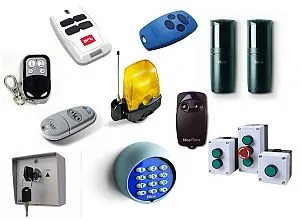
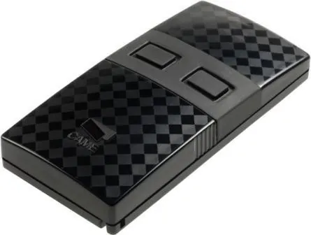
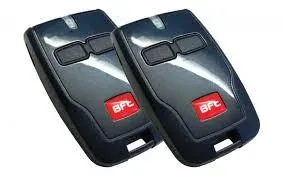
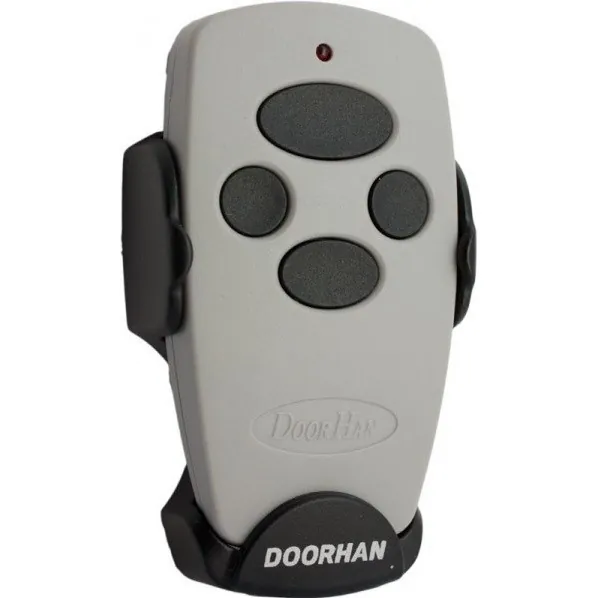
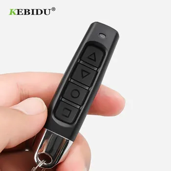
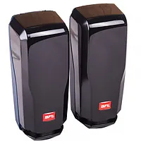

Пульты для шлагбаумов и воротШлагбаум мен қақпаға арналған пульттерRemotes for barriers and gates
Подбираем пульты для шлагбаумов и ворот, изготавливаем дубликаты и записываем их в память приёмника. Альтернатива пультам: управление со смартфона через Bluetooth-модуль ZMK.Шлагбаум мен қақпаға пульт таңдаймыз, көшірмесін жасап, жетек қабылдағышына бағдарламалаймыз. Пульттің баламасы: ZMK Bluetooth-модулі арқылы смартфоннан басқару.We supply remotes for barriers and gates, make copies and program them into the receiver. The alternative is smartphone control with the ZMK Bluetooth module.






Виды пультовПульт түрлеріTypes
Брелоки на 2 и 4 канала2 және 4 арналы брелоктар2- and 4-channel key fobs
Для шлагбаумов, распашных, откатных и гаражных ворот.Шлагбаумдарға, ашылмалы, сырғымалы және гараж қақпаларына.For barriers, swing, sliding and garage gates.
Кодовые клавиатурыКодты пернетақталарKeypads
Открытие по коду без пульта и ключа.Пультсіз және кілтсіз кодпен ашу.Opening by code, no remote or key.
РадиоприёмникиРадиоқабылдағыштарReceivers
Установка дополнительного приёмника, если оригинальные пульты сняты с производства.Түпнұсқа пульттер шығарылмаса, қосымша қабылдағыш орнату.An extra receiver when the original remotes are discontinued.
УслугиҚызметтерServices
- Подбор совместимого пульта по образцу или модели приводаҮлгі немесе жетек моделі бойынша үйлесімді пульт таңдауMatching a compatible remote to a sample or operator model
- Запись пульта в память приёмника шлагбаума или воротПультті шлагбаум немесе қақпа қабылдағышына бағдарламалауProgramming the remote into the barrier or gate receiver
- Удаление утерянных пультов из памяти приёмникаЖоғалған пульттерді қабылдағыш жадынан өшіруDeleting lost remotes from the receiver memory
- Комплектация пультами жилых комплексов или переход на управление со смартфонаТұрғын үй кешендерін пульттермен жабдықтау немесе смартфоннан басқаруға көшуRemotes for residential complexes, or a switch to smartphone control
Пульты CAME, BFT, NICE, DoorHan, FAAC, Alutech, An-Motors, Hormann, Baisheng и других марок.CAME, BFT, NICE, DoorHan, FAAC, Alutech, An-Motors, Hormann, Baisheng және басқа маркалардың пульттері.Remotes for CAME, BFT, NICE, DoorHan, FAAC, Alutech, An-Motors, Hormann, Baisheng and other brands.
Часто задаваемые вопросыЖиі қойылатын сұрақтарFrequently asked questions
Как подобрать пульт?Пультті қалай таңдауға болады?How do I choose a remote?
Отправьте фотографию пульта с обеих сторон или фотографию заводской таблички привода, и мы подберём совместимую модель.Пульттің екі жағынан немесе жетектің зауыттық тақтайшасының фотосуретін жіберіңіз, үйлесімді модельді таңдаймыз.Send photos of both sides of the remote or of the operator rating plate and we will find a compatible model.
Можно ли заменить пульты смартфоном?Пульттерді смартфонмен алмастыруға бола ма?Can a smartphone replace remotes?
Да. После установки Bluetooth-модуля ZMK шлагбаум и ворота открываются из приложения, раздавать пульты не требуется.Иә. ZMK Bluetooth-модулін орнатқаннан кейін шлагбаум мен қақпа қосымшадан ашылады, пульт таратудың қажеті жоқ.Yes. With the ZMK Bluetooth module the barrier and gates open from the app, so there is no need to hand out remotes.
Оставьте заявкуӨтінім қалдырыңызSend a request
Опишите задачу и по возможности приложите фотографию оборудования. Специалист ответит и подготовит предложение.Міндетті сипаттап, мүмкіндігінше жабдықтың фотосуретін қоса жіберіңіз. Маман жауап беріп, ұсыныс дайындайды.Describe your task and, if possible, attach a photo of the equipment. A specialist will reply with an offer.
Монтаж и ремонт — Алматы и Алматинская область. Доставка по всему Казахстану.Орнату және жөндеу — Алматы және Алматы облысы. Бүкіл Қазақстан бойынша жеткізу.Installation and repair in Almaty and Almaty Region. Delivery across Kazakhstan.
АлександрАлександрAlexander · +7 707 266 91 54 (WhatsApp) · Telegram @Zmk_kz · zmkalexandr@gmail.com